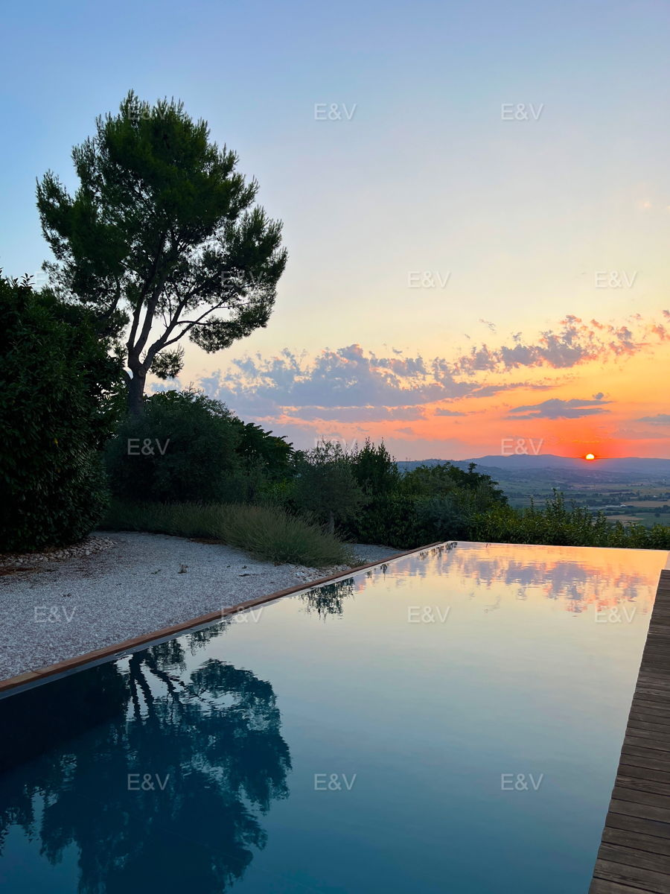

€1.080.000
Trevi · Umbria · Italy
Rare Trevi position a few steps from the historic center with a serious private infinity pool, panoramic terraces and flexible multi-unit living (main house + apartment + studios) — Umbrian lifestyle amenity under the €1.2M cap.
Opened 16 Sep 2026 on Engel & Völkers Assisi-Spoleto; asking €1.080.000; 560 m² / 5 bed / 7 bath / land 2,000 m²; hasSwimmingPool true; condition.veryGood; ACTIVE.
Open the listing